PROVOKE ME — STIMULUS PLATES
All 30 plates as the app shows them (art from public/provocations, caption typed in HTML). Light only, like the app.
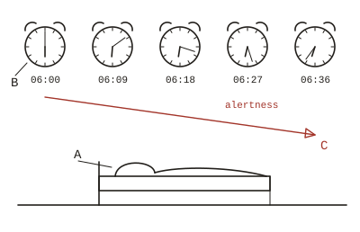
FIG. 2 — Stimulus: alarm, snoozed ×4.A: subject. B: alarm, 06:00–06:36. C: alertness, inverse.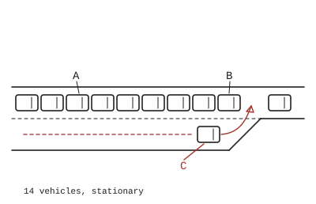
FIG. 3 — Stimulus: late merge, lane 2.A: queue, 14 vehicles. B: subject. C: merging vehicle.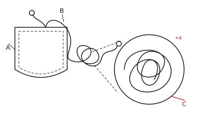
FIG. 4 — Stimulus: headphone cable, spontaneous knot.A: pocket. B: cable. C: knot, detail ×4.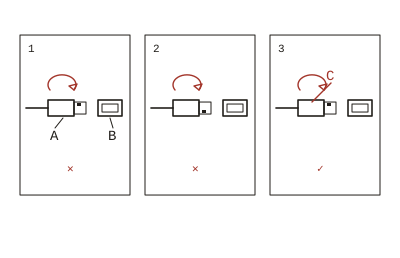
FIG. 5 — Stimulus: USB insertion, attempt 3.A: plug. B: port. C: orientation, attempts 1–3.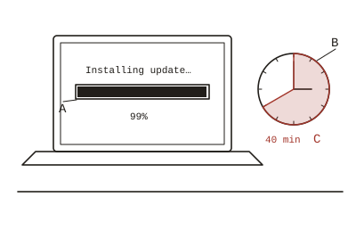
FIG. 6 — Stimulus: software update, 99%.A: progress bar. B: clock. C: time at 99%, 40 min.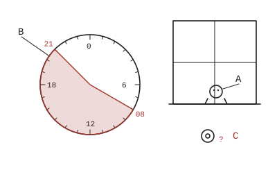
FIG. 7 — Stimulus: parcel, delivery window 08–21.A: subject, at window. B: clock, window shaded. C: arrival, unknown.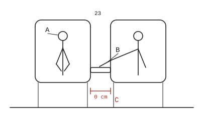
FIG. 8 — Stimulus: shared armrest, row 23.A: subject. B: neighbour, elbow. C: armrest, available width 0 cm.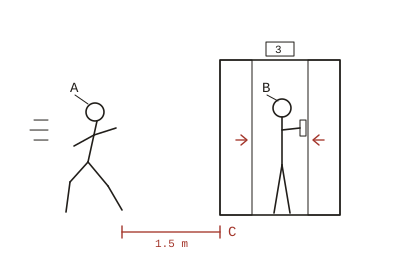
FIG. 9 — Stimulus: lift door, closing.A: subject, running. B: occupant, finger on CLOSE. C: gap, 1.5 m.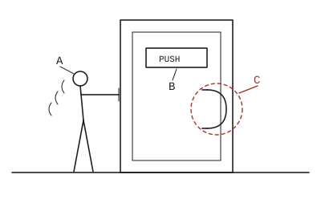
FIG. 10 — Stimulus: door, labelled PUSH.A: subject. B: sign. C: handle, pull type.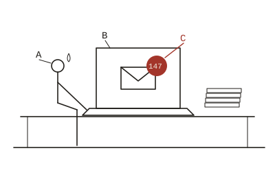
FIG. 11 — Stimulus: return from leave, day 1, 09:00.A: subject. B: laptop. C: unread, 147.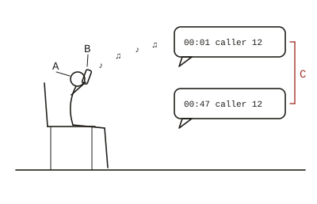
FIG. 12 — Stimulus: telephone queue, minute 47.A: subject. B: handset, hold music. C: queue position, unchanged.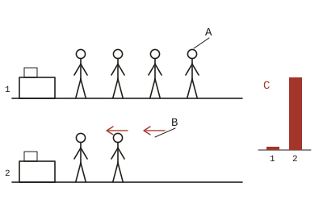
FIG. 13 — Stimulus: checkout queues, selection error.A: subject, queue 1. B: queue 2. C: relative progress.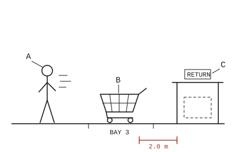
FIG. 14 — Stimulus: unattended trolley, bay 3.A: subject, departing. B: trolley. C: return, empty.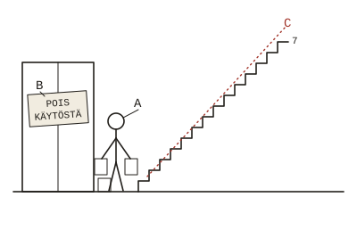
FIG. 15 — Stimulus: lift, out of service.A: subject, groceries ×3. B: sign. C: destination, floor 7.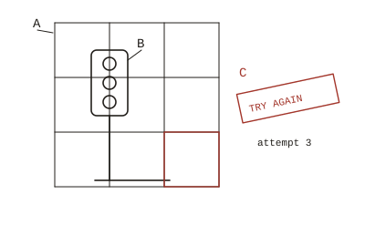
FIG. 16 — Stimulus: verification, traffic lights, attempt 3.A: grid, 3 × 3. B: traffic light, partial. C: result, “try again”.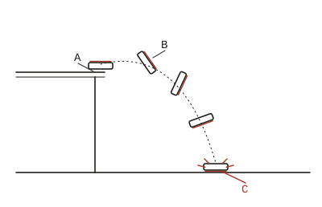
FIG. 17 — Stimulus: toast, buttered, in descent.A: table edge. B: toast, trajectory. C: point of impact, butter side.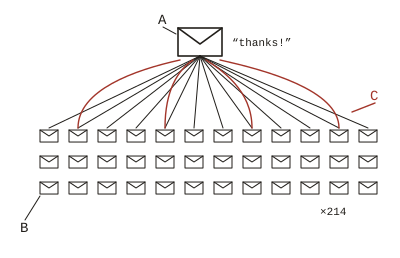
FIG. 19 — Stimulus: reply-all, cascade.A: origin, “thanks!”. B: recipients, 214. C: replies asking to be removed.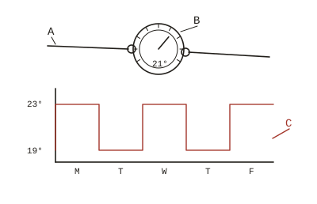
FIG. 20 — Stimulus: office thermostat, contested.A: subject. B: thermostat. C: setpoint over 5 days.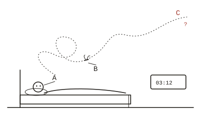
FIG. 21 — Stimulus: mosquito, single, 03:12.A: subject. B: mosquito, flight path. C: location, never confirmed.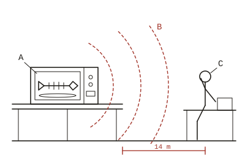
FIG. 22 — Stimulus: reheated fish, shared microwave.A: source. B: odour radius (est.). C: subject, desk 14 m.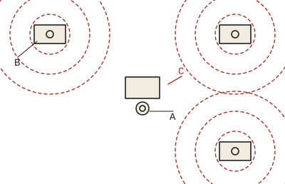
FIG. 23 — Stimulus: open-plan office, three calls on speaker.A: subject. B: sources, 3. C: overlapping wavefronts.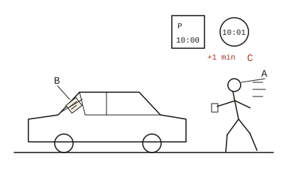
FIG. 24 — Stimulus: parking fine, 1 minute over.A: subject, returning. B: ticket. C: time exceeded.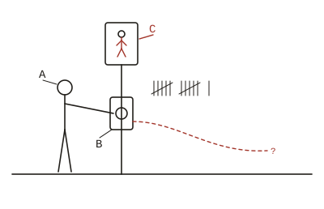
FIG. 25 — Stimulus: pedestrian button, pressed ×11.A: subject. B: button. C: signal, unchanged.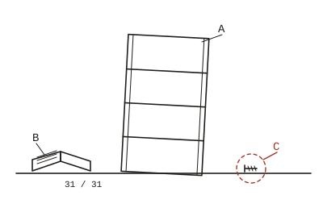
FIG. 26 — Stimulus: flat-pack shelf, assembly complete.A: shelf. B: instructions, step 31 of 31. C: screw, surplus.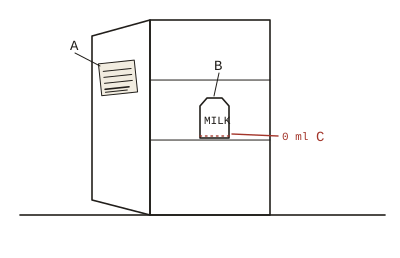
FIG. 27 — Stimulus: communal fridge, annotated.A: note. B: milk, contested. C: subject’s milk, 0 ml.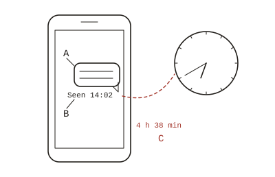
FIG. 29 — Stimulus: message, read, no reply.A: message. B: status, “seen 14:02”. C: elapsed, 4 h 38 min.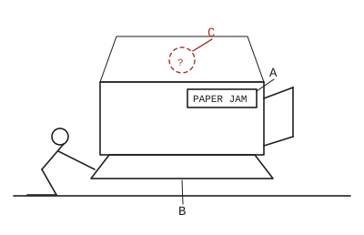
FIG. 30 — Stimulus: printer, paper jam (no paper present).A: display, “PAPER JAM”. B: tray, empty. C: jam, not located.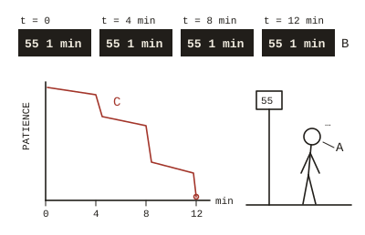
FIG. 31 — Stimulus: bus 55, status “arriving”.A: subject. B: display, four readings. C: patience, observed.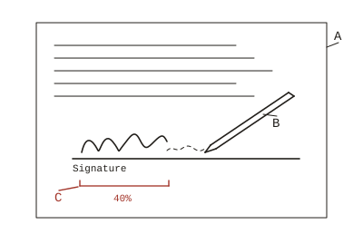
FIG. 33 — Stimulus: signature, interrupted.A: document. B: pen, empty. C: signature, 40% complete.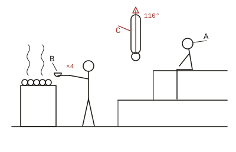
FIG. 35 — Stimulus: sauna, unrequested löyly.A: subject, top bench. B: ladle, 4th pour. C: temperature.